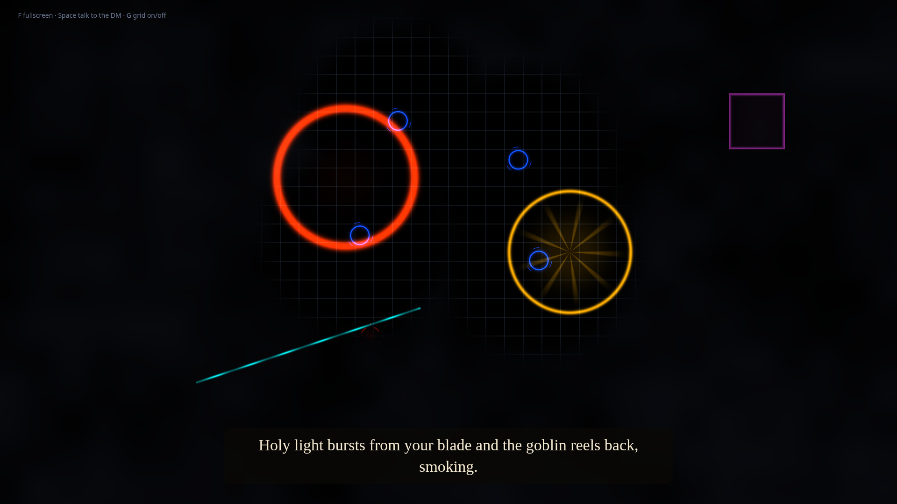

Maybe your friends are busy. Maybe you moved and the group didn't come with you. Maybe you never had one. Lonely Dungeon Master puts an AI Dungeon Master at your real table, with your real miniatures, so you can play tonight.
Runs on your own computer. Bring an OpenRouter key, or run everything offline with Ollama.
Session zero goes great. Then someone gets a new job, someone has a baby, and the group chat goes quiet for three weeks. The dice and the minis go back in the box. This project exists so they don't have to.
Play a side quest between real sessions. Your character keeps moving, and nobody has to find a free Saturday.
Run a party of one, or play every hero yourself. The DM keeps track of turns, hit points and what's hiding in the dark.
The forever-DM finally gets to be a player. Hand the screen to the AI and enjoy being surprised for once.
It still feels like a tabletop game, because it is one. You move real miniatures with your hands. The computer watches the board and paints light onto it.
Each miniature wears a small printed square tag. The camera reads the tags and knows which mini stands on which square.
A grid, a blue ring under each hero, a red target under each monster, and fog that only lifts where your party can see.
Say "Hey DM" and what you want to do. It listens, looks at the table, and follows the 5th Edition rules.
It narrates in a spoken voice while spells, blasts and beams appear right on the squares they hit.
Not a mockup. This screenshot came straight from the display page in demo mode: four heroes pushing back the fog, goblins still hidden in the dark, and the DM's last turn painted onto the grid.

Nothing exotic. Most of it might already be in a drawer.
Five commands. The full guide, with camera mounting tips, lives in the README.
# 1. Get the code
git clone https://github.com/ZackFairSldrFrst/lonely-dungeon-master
cd lonely-dungeon-master && pip install -r requirements.txt
# 2. Add your key (this file never leaves your computer)
echo "OPENROUTER_API_KEY=your-key-here" > .env
# 3. Print tags, then line up camera and projector
python main.py --mode markers
python main.py --mode calibrate
# 4. Play. Open the link it prints on the projector and press F.
python main.py --mode run
# No camera yet? Try it with pretend miniatures:
python main.py --mode demoThe software is free and open source under the MIT license. If you use a cloud AI through OpenRouter, you pay them for what you use. With Ollama, local Whisper and a local voice, it costs nothing to run.
Yes. Set the AI provider to Ollama, speech recognition to local, and the voice to Piper or pyttsx3. Then nothing leaves your computer.
Yes. Everyone sits around the same table and talks to the DM. It just doesn't need anyone else to show up before you can start.
Dungeons & Dragons 5th Edition. It rolls dice out loud, tracks hit points and conditions, and measures range from where your miniatures actually stand.
Please do. Open an issue or a pull request on GitHub. Saved campaigns and map loading are both open to anyone who wants them.